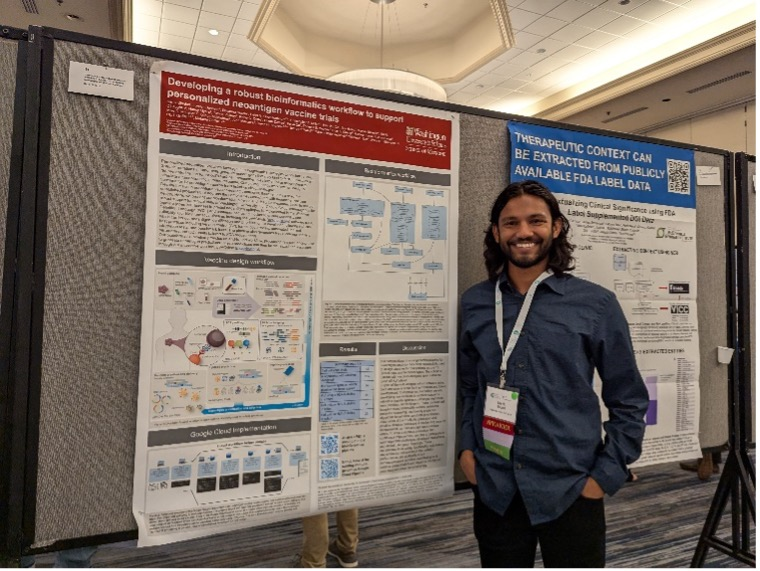

Faculty
Instructors
Malachi Griffith, Ph.D. is an Associate Professor of Medicine (Division of Oncology), Associate Professor of Genetics and Assistant Director of the McDonnell Genome Institute at Washington University. Dr. Griffith has more than 15 years of experience in the fields of genomics, bioinformatics, data mining, and cancer research. He has published over 130 studies, received numerous research awards and honors and held several large grants including an NIH NHGRI K99/R00 Career Development Award, an NCI ITCR U01 award, an NCI Biomedical Knowledgebase U24 award, and a V Scholar Award. He has mentored more than 50 bioinformatics trainees and taught more than 500 as an instructor for Cold Spring Harbor Laboratories and the Canadian Bioinformatics Workshops. Dr. Griffith’s research is focused on improving our understanding of cancer biology and the development of personalized medicine strategies for cancer using genomics and informatics technologies. Dr. Griffith is involved in more than ten investigator initiated clinical trials utilizing his lab’s tools for design of personalized neoantigen targeting immunotherapies. Dr. Griffith’s lab has made substantial contributions to open source and open access resources for cancer research. The development of bioinformatics methods and software for immunogenomics has become a major focus of his lab.
Obi Griffith, Ph.D. is an Associate Professor of Medicine and Genetics at Washington University School of Medicine in St. Louis, where he also serves as Assistant Director at the McDonnell Genome Institute. His research focuses on developing personalized medicine strategies for cancer, utilizing genomic technologies to study gene regulatory changes, particularly in breast cancer. Dr. Griffith employs bioinformatics and statistical methods to analyze high-throughput sequencing data, aiming to identify biomarkers for diagnostics, prognosis, and drug response prediction. He co-developed the Clinical Interpretations of Variants in Cancer (CIViC), an open-source database that links cancer mutations to targeted therapies. Dr. Griffith completed his PhD in Medical Genetics at the University of British Columbia in 2008 and has held postdoctoral fellowships at the BC Cancer Agency and Lawrence Berkeley National Laboratory. Before joining Washington University, he was an Assistant Professor at the University of British Columbia and a bioinformatics consultant at various institutions.

Nataly Naser Al Deen, Ph.D. is currently a Senior Computational Biologist at Memorial Sloan Kettering Cancer Center, leading the efforts on Spatial Transcriptomics Techniques (mainly Visium HD) in pre-malignant lesions, including in ovarian cancer (serous tubal intraepithelial carcinoma (STIC)) and gastric cancers (signet ring cell (SRC) carcinoma). She is a wet-lab cancer researcher by training (10 years) and recently shifted to computational oncology during her second postdoctoral fellowship in cancer immunotherapy and melanoma research at Dr. Antoni Ribas’ Lab at UCLA (2022-2024), focusing on spatial biology techniques to study tumor-immune interactions from patients with melanoma who underwent immune checkpoint blockade therapies. Prior, she completed a 2-year postdoctoral fellowship in cancer genomics at the Ding Lab at Washington University School of Medicine (WashU), where she led the single cell and single nuclei RNA/ATAC-sequencing technologies, Visium spatial transcriptomics and 3D Lightsheet Microscopy, focusing on breast, pancreatic, renal cell carcinoma, and metastatic colorectal cancers (wet-lab), and was part of the HTAN, CPTAC, and SenNet consortia. She obtained her Ph.D. in Cell and Molecular Biology from the American University of Beirut and received three fully-funded scholarships from the United States Department of State including the Fulbright Scholarship to Georgetown University where she obtained her M.Sc. in Tumor Biology. Through her parallel passion for science policy, advocacy, and activism for the rights of minority and indigenous populations, she founded an NGO in 2015 called “Pink Steps”, to serve as an exercise, health and mental-wellness support group for breast cancer survivors in Lebanon and was named on Forbes 30 Under 30 List for her humanitarian work. In 2018 she represented Lebanon at the 68th Lindau Nobel laureate Meeting in Physiology/Medicine and collaborated with Nobel Laureates on several panels including for research and science policy. She then served as the only Global Academic Fellow to the Precision Medicine Council at the World Economic Forum in 2019 and as an expert member at the Public Policy Projects UK’s Global Genomics Roundtables, Phase 2 in 2022-2024.
Nicholas Ceglia, Ph.D. is a principal computational biologist at Memorial Sloan Kettering Cancer Center in New York. He received his PhD in computer science from the University of California, Irvine. Currently, he leads the cellular phenotyping team that is part of the Shah Lab and the Computational Immuno-oncology initiative. His research focuses on the development of computational methods to understand co-evolution of cancer and the adaptive immune system.
Teaching Assistants

Kelsy Cotto, Ph.D. completed her PhD in the Molecular Cell Biology program at Washington University in St. Louis. Her thesis focused on the integration of genomic and transcriptomic data to identify cancer-specific splice altering variants. Prior to that, she graduated from Mercer University with honors in Biochemistry and Molecular Biology. She is passionate about using computational approaches to further understand biology and develop better therapeutic approaches for patients. She has experience working with genomic and transcriptomic data using data from Illumina, Oxford-Nanopore Technologies, 10X Genomics, particularly to identify tumor specific antigens and the TCRs that recognize them.
Evelyn Schmidt is a first-year PhD trainee and beginning research in Dr. Jennifer Foltz’s lab, where she uses single-cell sequencing approaches to improve natural killer cell therapy for cancer. Before starting my PhD, Evelyn worked as a bioinformatician with Dr. Obi and Malachi Griffith, contributing to the lab’s neoantigen calling pipeline and the development of pVACtools. She loves reading fantasy books, listening to all different types of music, and a good cup of coffee.

Kartik Singhal is a PhD student in the Molecular Genetics and Genomics program at Washington University in St Louis, USA. He is pursuing his thesis research in Malachi Griffith and Obi Griffith’s lab where he is interested in using multi-omic techniques to better understand cancer’s interaction with the immune system. He primarily analyzes single-cell omics data and works in R and Python for his analyses.
Matthew Zatzman, Ph.D. is a Senior Computational Biologist at Memorial Sloan Kettering Cancer Center, working under the supervision of Dr. Sohrab Shah and Dr. Andrew McPherson in the Department of Computational Oncology. Matthew completed his PhD in Dr. Adam Shlien’s lab at the University of Toronto, where he studied the role of hypertranscription in driving aggressive cancers. Currently, Matthew applies single-cell computational methods to map out the complex interplay between tumor and non-tumor cell phenotypes in the tumor microenvironment.